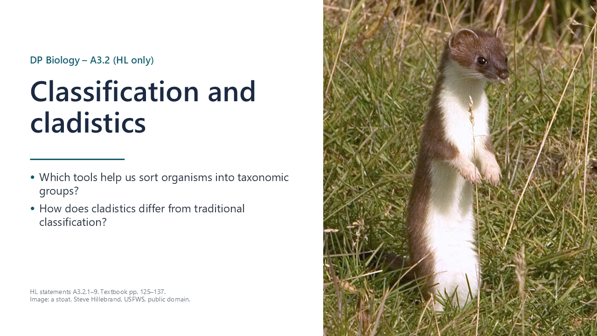
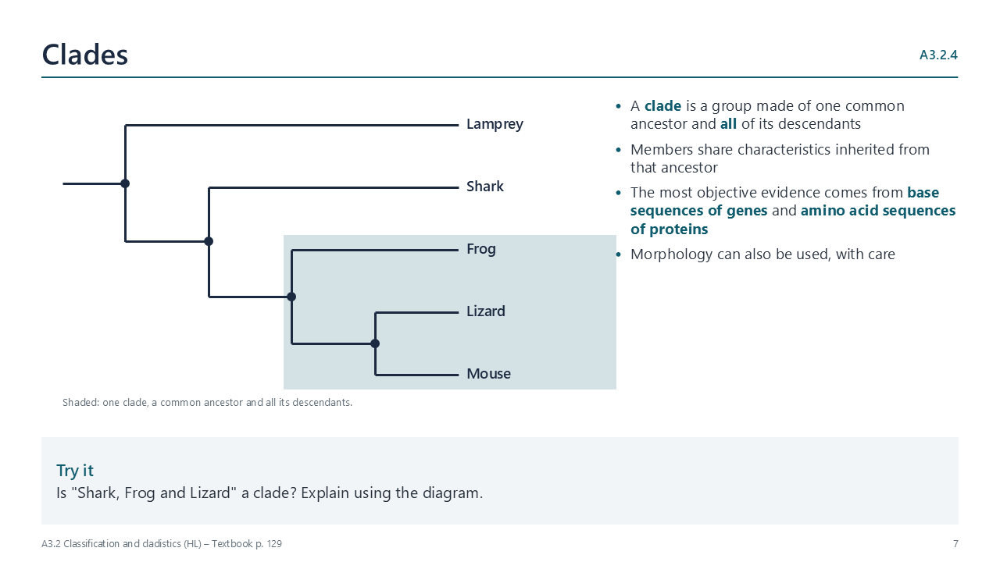
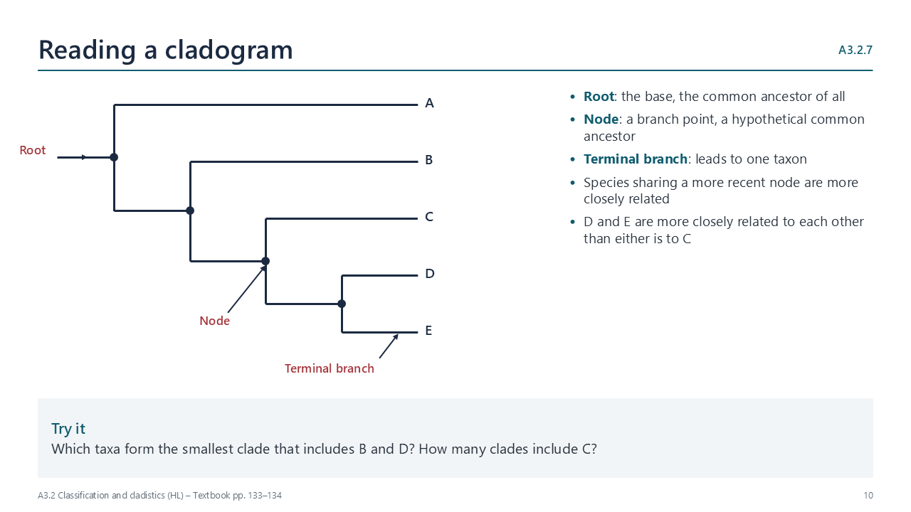
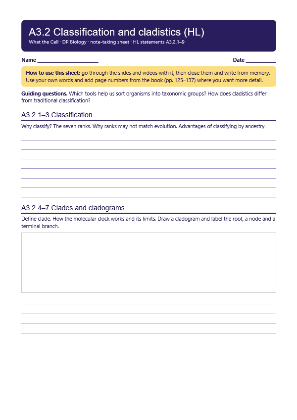
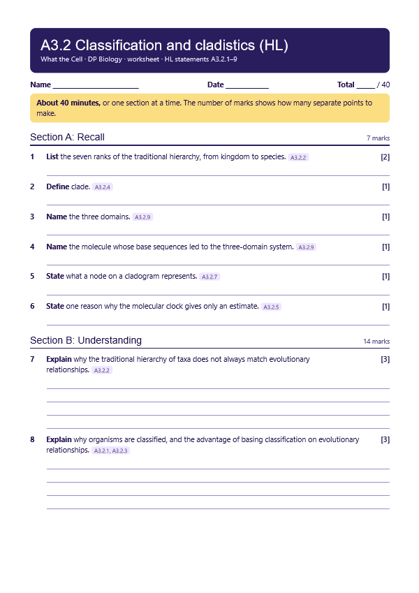

Why classify?
pp. 125–126Millions of species need organizing. A single binomial name works in every language, groups make identification easier, and a species' group lets us predict its features.

Written for this site from the class slides, with textbook page references for each statement. The chapter is on pages 125–137 of the course textbook. Image credits are on slide 15.
Millions of species need organizing. A single binomial name works in every language, groups make identification easier, and a species' group lets us predict its features.
The ranks from kingdom to species are fixed levels, but evolution produces continuous branching. Ranks are not equivalent between groups, convergent evolution can mislead, and some traditional groups, such as reptiles, leave out descendants of their ancestor.
If every member of a group comes from one common ancestor, members share inherited features, so we can predict the features of species that have not been studied, and the classification shows evolutionary history.

A clade is a common ancestor and all its descendants. The most objective evidence for a clade comes from base sequences of genes and amino acid sequences of proteins; morphology can also be used.
Sequence differences build up at a roughly steady rate, so the number of differences estimates how long ago two clades diverged. It is only an estimate because mutation rates vary with generation time, population size and selection.
Count the differences between each pair of sequences. Join the most similar pair first, then add the others in order of similarity.

The root is the common ancestor of all the taxa; each node is a hypothetical common ancestor; each terminal branch leads to one taxon. Taxa that share a more recent node are more closely related.
DNA comparisons showed that the figwort family was not a clade, so many of its genera, such as foxgloves and speedwells, were moved to other families, mostly the plantain family.
In 1977, ribosomal RNA sequences showed that prokaryotes form two very different groups. A new rank, the domain, now divides life into Bacteria, Archaea and Eukarya.
Select a video to play it here. Select it again to close it.
Print this guide and complete it as you work through the slides and videos. It asks for your own explanations, so close the notes while you try each section.

The self-check needs JavaScript to run.
A printable worksheet covering all nine statements, from quick recall to data questions and a longer answer. It has 40 marks and takes about 40 minutes, or you can do one section at a time.
Your teacher has the mark scheme.

You will need: Short aligned amino acid sequences for five species from UniProt, paper
Safety: No practical hazards.
Carry this out with your teacher's supervision and follow your school's lab rules.
In 1977 Carl Woese used rRNA sequences to propose a third domain, Archaea. The idea met strong initial resistance.
The tree of life changed when the data changed. Consider what this implies about taxonomy as knowledge.
Summarised in our own words. Use each code to find the exact wording in your textbook or the IB subject guide.
© 2026 Akash Parthi Bendran. Please ask before using or sharing any resources from this site: see permission to use.